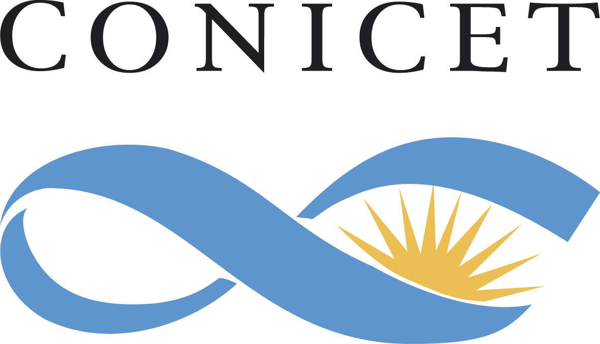

Proyectos Federales de Innovacion
Personas Capacitadas
Empresas y Fundaciones que realizan I+D
Grupos de Investigacion
Investigadores
Indicadores históricos




Ejecutamos proyectos de investigación científica y tecnológica de excelencia, a través de convocatorias públicas y competitivas
Apoyamos la transferencia de tecnología y el desarrollo de la innovación, a través de programas de apoyo a la creación de empresas y de la vinculación entre el sector público y privado
Esto se logra a través de la investigación científica y tecnológica en áreas como la energía, el medio ambiente, la salud y la seguridad alimentaria.
Promovemos la participación de la sociedad en la ciencia y la tecnología, a través de programas de divulgación científica y de educación científica para la ciudadanía
Proyectos Federales de Innovacion
Personas Capacitadas
Empresas y Fundaciones que realizan I+D
Grupos de Investigacion
Investigadores
Indicadores históricos
